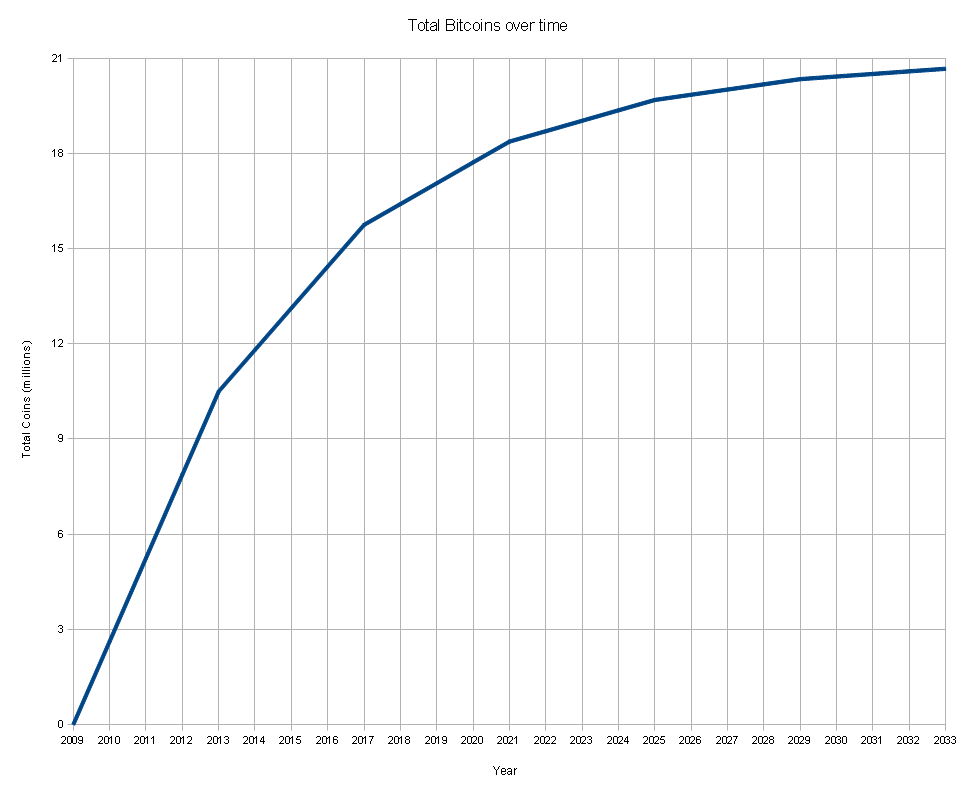

kryptografia w służbie rewolucji ekonomicznej
kryptografia w służbie rewolucji ekonomicznej
Czym są pieniądze?
Pieniądze to materialny lub niematerialny środek, który można wymienić na towar lub usługę.
- Pzechowują wartość
- Służą do wymiany dóbr
W dzisiejszych czasach głównym środkiem płatniczym są tzw. waluty fiducjarne (łac. fides – wiara),
których wartość pochodzi z wiary w to, że znajdą się osoby chętne go przyjąć.
Mają one wiele problemów:
- Brak ograniczenia ich ilości (drukowanie pieniądza)
- Brak prostego mechanizmu przekazywania na duże odległości
Czym jest Bitcoin?
- Bitcoin jest cyfrową, zdecentralizowaną walutą opartą na kryptografii
- Bitcoin umożliwia transakcje finansowe online pomiędzy stronami bez udziału stron trzecich
- Stworzony został przez programistę (lub grupę programistów) o pseudonimie Satoshi Nakamoto
- Bitcoin nie jest kontrolowany przez jakąkolwiek firmę, czy rząd
- Bitcoiny w swym działaniu imitują złoto
Cechy Bitcoinów
- Całkowita liczba BTC jest ograniczona:
- Obecnie w obiegu: 11 MLN
- Do 2060 roku: 21 MLN

Cechy Bitcoinów c.d.
- Każdy Bitcoin jest podzielny do 8 miejsc po przecinku
- Pozwala to na podzielenie wszystkich BTC w obiegu na 21*10^14 części
- Najmniejszy nominał to 1 satoshi (0.00000001 BTC)
- Limit ten może zostać zmieniony
- Transakcje w sieci Bitcoin są nieodwracalne
- Krótki czas potwierdzenia transakcji (od 10 minut do 1 godziny)
- Niski koszt transakcji
Jak działa Bitcoin?
- Bitcoiny przypisane są do kont będących parą kluczy ECDSA (algorytm szyfrowania asymetrycznego)
- Adresem konta jest jego klucz publiczny
- Liczba możliwych adresów: 2^160 (1,461,501,637,330,902,918,203,684,832,716,283,019,655,932,542,976)
- Kiedy tworzone jest nowe konto, wybierany jest losowy adres. Prawdopodobieństwo kolizji jest niemalże zerowe!
- ale... "correct horse battery staple"
- Przykładowy adres: 1M1Xqm3GKNawhdKSNXgymYB72TBUnS9z4r
- Adresy pogrupowane są w portfele
- Przynależność bitcoinów do adresu zapisana jest za pomocą łańcucha transakcji
Jak działa Bitcoin? c.d.
- Lista wszystkich transakcji jest publiczna
- Transakcja składa się z dowolnej liczby wejść i wyjść (adresów źródłowych i docelowych)
- Suma BTC na wejściu i wyjściu musi być zgodna
- Jeżeli tak nie jest, to nadmiarowe BTC są wysyłane jako tzw. reszta
- Każda transakcja jest cyfrowo podpisana przez nadawcę
- Transfer środków polega na podpisaniu hasha SHA256 poprzedniej transakcji oraz publicznego klucza nowego właściciela
- Odbiorca może zweryfikować transakcję za pomocą klucza publicznego nadawcy

Problem podwójnych wydatków (double-spend problem)
- Odbiorca nie może zweryfikować, czy nadawca nie wydał tych samych bitcoinów wiele razy
- Częstym rozwiązaniem jest wprowadzenie centralnej instytucji nadzorującej transakcje
Rozwiązanie: Serwer timestamp
- Rozwiązaniem jest rozproszony serwer timestamp przechowujący wszystkie transakcje
- Transakcje przechowywane są w blokach, które są rozsyłane do wszystkich użytkowników
- Każdy blok zawiera hash SHA256 poprzedniego bloku, tworząc w ten sposób łancuch (ang. blockchain)

Dowód pracy (proof of work)
- Stworzenie nowego bloku wymaga rozwiązania problemu matematycznego
- Poszukiwana jest specjalna wartość (tzw. nonce), która po dołączeniu do bloku sprawi, że jego hash SHA256 będzie zaczynał się od pewnej liczby zer
- Liczba wymaganych zer określona jest przez parametr trudności
- Trudność określona jest tak, aby jeden blok był generowany co około 10 minut. Nowa wartość trudności ustalana jest co 2016 bloków.
- Mechanizm ten pozwala na osiągnięcie porozumienia pomiędzy użytkownikami odnośnie historii transakcji
- Tylko transkacje zawarte w najdłuższym łańcuchu bloków są uważane za ważne

Decentralizacja zaufania
Dzięki takiemu rozwiązaniu nie musi istnieć centralna instytucja weryfikująca transakcje, a oszustwa są praktycznie niemożliwe:
- Aby zmodyfikować poprzedni blok, atakujący musiałby wygenerować własną jego wersję, a następnie wykonać pracę związaną ze wszystkimi jego następcami aby wyprzedzić oryginalny blockchain
- Trudność takiej operacji rośnie wykładniczo wraz z ilością bloków wygenerowanych później
- Obecnie jako całkowicie bezpieczną wartość uważa się 6 wygenerowanych bloków (potwierdzeń)
- Jeżeli większość mocy obliczeniowej jest kontrolowana przez "uczuciwych" użytkowników, to ich łańcuch bloków będzie rósł szybciej od tych "nieuczciwych"
- Im więcej użytkowników i mocy obliczeniowej, tym system jest bezpieczeniejszy
- Dlaczego w takim razie użytkownik chciałby być uczciwy?
Wydobywanie bitcoinów
- Użytkownik, który wygeneruje blok otrzymuje w nagrodę nowe bitcoiny
- Początkowo było to 50 BTC
- Obecnie wartość ta wynosi 25 BTC
- Wartość ta zmniejsza się o połowę co 210,000 bloków (średnio co 4 lata)
- Dodatkowo otrzymuje on wszystkie opłaty za transakcje zawarte w bloku
- Rozwiązanie takie sprawia, że użytkownicy są zmotywowani do wspierania sieci i generowania prawidłowych bloków
- Nie wszyscy użytkownicy tworzą bloki. Tych, którzy się tym zajmują potocznie nazywa się górnikami.
- Górnicy często łączą się w gildie, aby zwiększyć szansę na odkrycie bloku. Nagroda jest dzielona pomiędzy wszystkich członków gildii.
Wydobywanie bitcoinów - urządzenia
- Na początku istnienia sieci do generowania hashy SHA256 używane były CPU
- Wkrótce powstały pierwsze implementacje bitcoina wykorzystujące do obliczeń karty graficzne
- prędkości do 1000 MHash/s
- Następnym krokiem w rozwoju sieci były specjalnie zaprogramowane układy FPGA (Field Programmable Gate Array)
- Obecnie do generowania hasy SHA256 wykorzystuje się dedykowane układy scalone (tzw. ASIC - Application Specific Integrated Circuit)
Problemy i zagrożenia dla sieci
- Atak 51%
- Mało prawdopodobny ze względu na nieopłacalność
- Komputery kwantowe - możliwość "odwrócenia" ECDSA
- Rozwiązanie: zmiana algorytmu obsługującego konta
- Błędy w oprogramowaniu
- Prawdopodobne, jednak jakość kodu w implementacji bitcoin jest bardzo wysoka
- Zdarzył się już przypadek tzw. fork'a - problem został bardzo szybko rozwiązany
- Utrata kluczy prywatnych - odzyskanie bitcoinów z kont do których właściciele zagubili klucze jest niemożliwe
- Nie jest to duży problem - w obiegu faktycznie będzie mniej BTC, jednak dzięki ich podzielności nigdy nie zabraknie waluty
- W najgorszym razie cały światowy rynek będzie warty 1 BTC ;)
- Obecnie szacuje się, że około 1mln BTC zostało utraconych
Aktualny stan sieci

- Nagroda za stworzenie bloku: 25 BTC
- Trudność: 12,153,411.71
- Hash Rate sieci: 128,079.67 GH/s
- Kurs USD/BTC: 120 USD
- Kurs PLN/BTC: 390 PLN
- Wartość wszystkich BTC: 1,350,481,214 USD
Jak zdobyć bitcoiny?
Istnieje wiele możliwości:
Co można z nimi zrobić?
Z bitcoinami można zrobić praktyczne wszystko to, co ze zwykłą walutą:
Dlaczego Bitcoin?
Jaką przewagę posiada Bitcoin nad tradycyjnymi walutami?
- Niemal natychmiastowy transfer środków na dużą odległość bez prowizji
- Próbowaliście kiedyś przesłać komuś pieniądze za granicę?
- Możliwość zawierania anonimowych transakcji
- Brak konieczności istnienia banków
- Scenariusz cypryjski nie miałby prawa bytu w systemie opartym o Bitcoiny
- Deflacja waluty zamiast inflacji
- Co roku twoje pieniądze tracą nawet do 5% swojej wartości (w czasach dobrobytu)
- Bardzo wiele nowych możliwości dzięki protokołowi Bitcoin:
- Mikrotranakcje
- Escrow
- Transakcje wiązane
- Kryptograficzne loterie
Ciekawostki
- Pierwszą fizyczną rzeczą zakupioną w BTC była pizza warta 25 USD kupiona za 10000 BTC. Dzisiaj jej wartość wynosiłaby 1 213 944 USD.
- Bitcoiny dzięki swojej anonimowości często są wykorzystywane do przeprowadzania nielegalnych transakcji
- Artykuł o Bitcoin jest jednym z 35 najczęściej czytanych na Wikipedii
- Istnieje duża szansa, że Satoshi nadal posiada około 1mln BTC wygenerowanych we wczesnym etapie rozwoju systemu
←
→
/
#